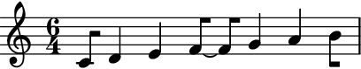

auxjad.prettify_rewrite_meter¶
-
auxjad.prettify_rewrite_meter(container: abjad.core.Container.Container, meter: Union[tuple, abjad.meter.Meter, abjad.indicators.TimeSignature.TimeSignature, abjad.utilities.Duration.Duration], *, fuse_across_groups_of_beats: bool = True, fuse_quadruple_meter: bool = True, fuse_triple_meter: bool = True)¶ Mutates an input container (of type
abjad.Containeror child class) in place and has no return value; this function fuses pitched leaves according to the rules shown below, improving the default output ofabjad.mutate().rewrite_meter().- Basic usage:
Meters whose denominators are a crotchet or longer get tied notes within a beat after
abjad.mutate().rewrite_meter()when they are at an offsetdenominator / 4, so a rhythm such asdenominator / 4denominator / 2denominator / 4becomesdenominator / 4denominator / 4~denominator / 4denominator / 4. This function looks for those specific cases and fuses them, generating an output which is often more readable.>>> staff = abjad.Staff( ... r"\time 3/4 c'16 d'8 e'16 f'16 g'16 a'8 b'8 c''16 d''16") >>> meter = abjad.Meter((3, 4)) >>> abjad.mutate(staff).rewrite_meter(meter) >>> abjad.f(staff) \new Staff { \time 3/4 c'16 d'16 ~ d'16 e'16 f'16 g'16 a'8 b'8 c''16 d''16 }
>>> auxjad.prettify_rewrite_meter(staff, meter) >>> abjad.f(staff) \new Staff { \time 3/4 c'16 d'8 e'16 f'16 g'16 a'8 b'8 c''16 d''16 }
- Other examples:
The rhythm of the leaves just before and after the two leaves to be fused can be different than
denominator / 4, as the function searches for logical ties of specific length and offset, and its surroundings do not matter.>>> staff = abjad.Staff(r"\time 3/4 c'32 d'32 e'8 f'16 " ... r"\times 2/3 {g'32 a'32 b'32} c''8 " ... r"r16 r32. d''64 e''8 f''32 g''32" ... ) >>> meter = abjad.Meter((3, 4)) >>> abjad.mutate(staff).rewrite_meter(meter) >>> abjad.f(staff) \new Staff { \time 3/4 c'32 d'32 e'16 ~ e'16 f'16 \times 2/3 { g'32 a'32 b'32 } c''16 ~ c''16 r16 r32. d''64 e''16 ~ e''16 f''32 g''32 }
>>> auxjad.prettify_rewrite_meter(staff, meter) >>> abjad.f(staff) \new Staff { \time 3/4 c'32 d'32 e'8 f'16 \times 2/3 { g'32 a'32 b'32 } c''8 r16 r32. d''64 e''8 f''32 g''32 }
fuse_across_groups_of_beats:By default, this function also fuses rhythms of type
denominator / 2denominator / 2~denominator / 2denominator / 2, becomingdenominator / 2denominatordenominator / 2. This is only applied when the meter’s structure has a depth of 2, which is the case for meters with numerators equal to or larger than5.>>> staff = abjad.Staff(r"\time 6/4 c'8 d'4 e'4 f'4 g'4 a'4 b'8") >>> meter = abjad.Meter((6, 4)) >>> abjad.mutate(staff).rewrite_meter(meter) >>> abjad.f(staff) \new Staff { \time 6/4 c'8 d'8 ~ d'8 e'8 ~ e'8 f'8 ~ f'8 g'8 ~ g'8 a'8 ~ a'8 b'8 }
>>> auxjad.prettify_rewrite_meter(staff, meter) >>> abjad.f(staff) \new Staff { \time 6/4 c'8 d'4 e'4 f'8 ~ f'8 g'4 a'4 b'8 }
to disable this behaviour, set the optional keyword argument
fuse_across_groups_of_beatstoFalse.>>> staff = abjad.Staff(r"\time 6/4 c'8 d'4 e'4 f'4 g'4 a'4 b'8") >>> meter = abjad.Meter((6, 4)) >>> abjad.mutate(staff).rewrite_meter(meter) >>> auxjad.prettify_rewrite_meter(staff, ... meter, ... fuse_across_groups_of_beats=False, ... ) >>> abjad.f(staff) \new Staff { \time 6/4 c'8 d'8 ~ d'8 e'8 ~ e'8 f'8 ~ f'8 g'8 ~ g'8 a'8 ~ a'8 b'8 }

abjad.Meterwithincrease_monotonic=True:The fused notes will respect the beat structures of such meters, even when
increase_monotonicis set to the non-default valueTrue. Compare the outputs below.>>> staff = abjad.Staff(r"\time 7/4 c'8 d'4 e'4 f'4 g'4 a'4 b'4 c''8") >>> meter = abjad.Meter((7, 4)) >>> abjad.mutate(staff).rewrite_meter(meter) >>> auxjad.prettify_rewrite_meter(staff, meter) >>> abjad.f(staff) \new Staff { \time 7/4 c'8 d'4 e'4 f'8 ~ f'8 g'4 a'8 ~ a'8 b'4 c''8 }
>>> staff = abjad.Staff(r"\time 7/4 c'8 d'4 e'4 f'4 g'4 a'4 b'4 c''8") >>> meter = abjad.Meter((7, 4), increase_monotonic=True) >>> abjad.mutate(staff).rewrite_meter(meter) >>> auxjad.prettify_rewrite_meter(staff, meter) >>> abjad.f(staff) \new Staff { \time 7/4 c'8 d'4 e'8 ~ e'8 f'4 g'8 ~ g'8 a'4 b'4 c''8 }
- Multiple measures:
This function can take handle multiple measures at once, as long as they share the same meter.
>>> staff = abjad.Staff(r"\time 5/8 c'16 d'8 e'8 f'8 g'8 a'16 ~ " ... r"a'16 b'8 c''8 d''8 e''8 f''16" ... ) >>> meter = abjad.Meter((5, 8)) >>> for measure in abjad.select(staff).group_by_measure(): ... abjad.mutate(measure).rewrite_meter(meter) >>> abjad.f(staff) \new Staff { \time 5/8 c'16 d'16 ~ d'16 e'16 ~ e'16 f'16 ~ f'16 g'16 ~ g'16 a'16 ~ a'16 b'16 ~ b'16 c''16 ~ c''16 d''16 ~ d''16 e''16 ~ e''16 f''16 }
>>> auxjad.prettify_rewrite_meter(staff, meter) >>> abjad.f(staff) \new Staff { \time 5/8 c'16 d'8 e'8 f'16 ~ f'16 g'8 a'16 ~ a'16 b'8 c''8 d''16 ~ d''16 e''8 f''16 }
fuse_quadruple_meter:This function also takes care of two special cases, namely quadruple and triple meters. By default, it will fuse leaves in quadruple meters across beats 1 and 2, and across beats 3 and 4 (as long as they fulfil the other requirements of duration and offset).
>>> staff = abjad.Staff(r"\time 4/4 c'8 d'4 e'4 f'4 g'8") >>> meter = abjad.Meter((4, 4)) >>> abjad.mutate(staff).rewrite_meter(meter) >>> auxjad.prettify_rewrite_meter(staff, meter) >>> abjad.f(staff) \new Staff { \time 4/4 c'8 d'4 e'8 ~ e'8 f'4 g'8 }
Set
fuse_quadruple_metertoFalseto disable this behaviour.>>> staff = abjad.Staff(r"\time 4/4 c'8 d'4 e'4 f'4 g'8") >>> meter = abjad.Meter((4, 4)) >>> abjad.mutate(staff).rewrite_meter(meter) >>> auxjad.prettify_rewrite_meter(staff, ... meter, ... fuse_quadruple_meter=False, ... ) >>> abjad.f(staff) \new Staff { \time 4/4 c'8 d'8 ~ d'8 e'8 ~ e'8 f'8 ~ f'8 g'8 }
fuse_triple_meter:In the case of triple meters, it will fuse leaves across any beat as long as the previously mentioned conditions of offset and duration are met.
>>> staff = abjad.Staff(r"\time 3/4 c'8 d'4 e'4 f'8") >>> meter = abjad.Meter((3, 4)) >>> abjad.mutate(staff).rewrite_meter(meter) >>> auxjad.prettify_rewrite_meter(staff, meter) >>> abjad.f(staff) \new Staff { \time 3/4 c'8 d'4 e'4 f'8 }
Similarly to the example before, set
fuse_triple_metertoFalseto disable this behaviour.>>> staff = abjad.Staff(r"\time 3/4 c'8 d'4 e'4 f'8") >>> meter = abjad.Meter((3, 4)) >>> abjad.mutate(staff).rewrite_meter(meter) >>> auxjad.prettify_rewrite_meter(staff, ... meter, ... fuse_triple_meter=False, ... ) >>> abjad.f(staff) \new Staff { \time 3/4 c'8 d'8 ~ d'8 e'8 ~ e'8 f'8 }
Warning
The input container must be a contiguous logical voice. When dealing with a container with multiple subcontainers (e.g. a score containings multiple staves), the best approach is to cycle through these subcontainers, applying this function to them individually.